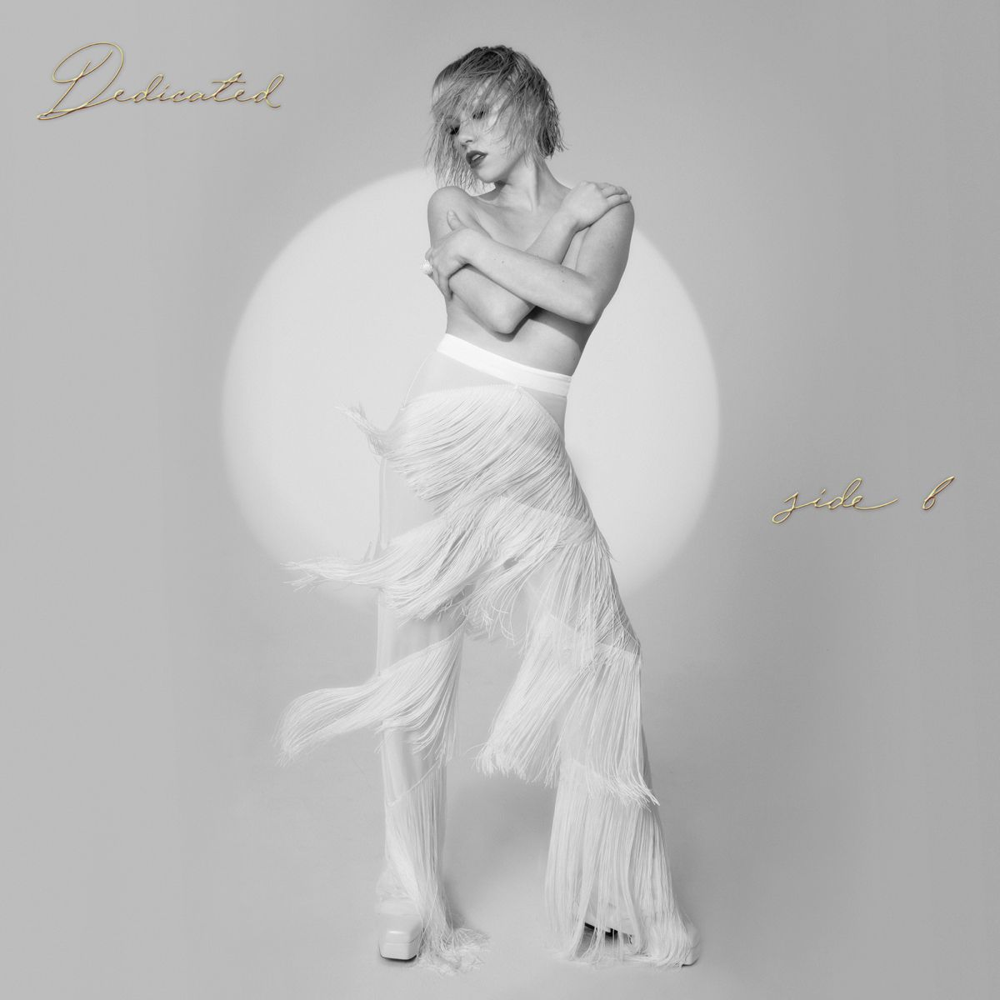

-

Tug of War (2008)
Tug of War is Carly Rae Jepsen’s debut album, released on September 30, 2008. This album has ten tracks, including singles “Sunshine on my Shoulders” “Tug of War” “Bucket” and “Sour Candy.” This album was produced by Canadian record producer and songwriter, Ryan Stewart. It was initially only released in Canada, but eventually got a digital mainstream release on iTunes in 2013. This album remains a hidden gem of her career, as it is more pop-rock and folk compared to the rest of her discography.
-

Kiss (2012)
Her second studio album, Kiss, was released on September 14, 2012. This album includes the international hit single, “Call Me Maybe,” which peaked at #1 in several countries, including the United States and Canada. Other singles include “Good Time” featuring Owl City, “This Kiss” and “Tonight I’m Getting Over You.” The single “Almost Said It” was released exclusively on Canadian iTunes but received no promotion and did not appear on charts. This teen-pop and dance-pop album was undoubtedly the beginning of Jepsen’s career as an international artist.
-

Emotion (2015)
Her next album, Emotion (stylized E•MO•TION), was released August 21, 2015 worldwide. Singles from this album are “I Really Like You” “Run Away With Me” and “Your Type.” W hile Kiss marked her beginnings of an international artist, Emotion is what gained her a large cult fanbase following. While still within the pop genre, this album is more inspired by alternative styles and 1980s music as opposed to teen-pop. Many critics applaud it as being a mature upgrade from her previous album, Kiss. This album made it onto many lists for best albums of 2015 and even the decade.
-

Dedicated
This album was released on May 17, 2019. The singles from this album include “Party For One” “Julien” “Now That I found You” / “No Drug Like You” and “Too Much.” This album is a much more relaxed approach to her established penchant for 80s pop music. The album began under the working title “Music To Clean Your House To.” The songs from this album can be described as electropop, synth-pop, disco pop, and dance pop with elements of house and R&B. Like most of her music, this album was dedicated to love: from the anxiousness of a new relationship, lovesickness, to coming to terms with being alone.
-

Dedicated Side B
Dedicated Side B is a companion album to Dedicated and was released on May 21, 2020. This album features 12 outtake tracks; Jepsen had originally written over 200 songs for Dedicated. Critics have described this album as exploding with emotion, as opposed to Dedicated, which starts out more lowkey and mellow. Jepsen has described this album as “I wanted to flip the switch and just be like, ‘Welcome to love, everyone! We’re going to have a party! Stop cleaning your house!’” Genre wise, this album is primarily dance-pop with disco influences.